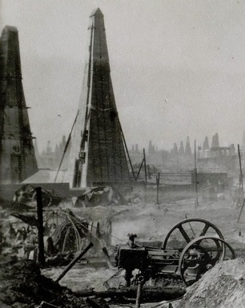

Когда в России закончится нефть?
ВМЕСТО НЕФТИ - ВОДА
Российская Федерация и Саудовское коро левство - давние конкуренты по нефтедобыче. РФ не раз выходила на 1-е место в мире, извлекая из недр до 11 млн баррелей в сутки. А вторую и третью пози ции занимали саудиты или американцы. Но стра ны-соперники добиваются преоблада ния на рынке разными методами и платят за него раз ную цену.
Аравийский полуостров богат нефтью, как никакое дру гое место. Добыча «чёрного золота» обходит ся местным принцам недорого - максимум в 10 долл. за «бочку». В США запасов нефти в разы меньше, поэтому здесь её берегут: качественные месторождения за консервировали и вкладывают огромные день ги в разработку дорогих сланцевых углево дородов.
Россия же побеждает благодаря интенсивно му освоению крупных месторождений в Запад ной Сибири. Нефть у нас не хуже, чем в районе Персидско го залива, но обходится дороже. И главное - лучшие месторождения истощаются. Знаме нитый Самотлор выработан уже на 75%. В жидко сти, которая бьёт здесь из скважин, нефти только 5%, остальное - вода. Не это ли имел в виду саудовский принц?
«Через 19 лет могут закончиться только запасы лег ко добываемой маловязкой нефти, разве данные ещё в советское время, - вносит ясность науч ный руководитель Института проблем нефти и га за РАН, академик Анатолий Дмитриевский. - Но, во-пер вых, это произойдёт, только если использовать тра диционные методы добычи. А наш институт раз работал и уже опробовал технологию, которая позволяет эксплуатировать месторожде ния с обводнённостью больше 80% и добиваться себестоимости нефти в 1,2 долл. за баррель. На Самот лоре эта технология позволит работать ещё 150 лет. А в других районах увеличить добычу более вяз кой, чем в Сибири, нефти помогут инновации. Только Татарстан получил 200 патентов в этой обла сти. Так вот, если учесть всю эту труднодоступную нефть, то её в России больше, чем на 50 лет».
Место для рекламы
И это ещё не всё. Даже в Западной Сибири за полувеко вое освоение разведано лишь 44% начальных суммар ных ресурсов нефти, а на шельфах российских морей - всего 4,6%. Если усилить изучение недр, запасы можно нарастить.
ГАЗ: РЕСУРС № 1
Активнее всего извлекаются те богатства, на ко торые есть устойчивый спрос, - к примеру, газ. По запа сам «голубого топлива» РФ на 1-м месте в мире, а по добыче - на 2-м после США. Две трети газовых ресур сов сосредоточено в Западно-Сибирском бас сейне, который выработан пока только на 37%. Боль шие перспективы в Восточной Сибири, кото рую в 2019 г. должен соединить с Китаем новый газопро вод. После этого планируется начать разра ботку крупнейших месторождений в Якутии и Иркут ской области. Однако в 2016-2017 гг. ни одного замет ного газового месторождения в эксплуа тацию не введено. Новые проекты тормозят за падные санкции, ограничившие приток в Россию инве стиций и оборудования.
Другая российская гордость - никель: 3-е место по запа сам после Индонезии и Австралии, 2-е место по до быче после Филиппин. 85% руд, содержащих ни кель, залегают на Таймыре, Кольском полуост рове и в Карелии. Информация об общих запасах этого минерала закрыта. Но известно, что ком пания «Норильский никель» обеспечена сырьём на 50 лет. В целом в стране разрабатывается пока лишь 58% запасов никеля, поставленных на госба ланс. В 2016 г. прирост ресурсов, годных для разработки, в никелевой отрасли в 3 раза превысил добы чу.
И наконец, золото, по которому РФ стабильно на 3-м месте в мире как по запасам (после ЮАР и Канады), так и по производству (после КНР и Австралии). По данным Со юза золотопромышленников России, в 2017 г. был поставлен рекорд: добыто 280,68 т драгоценно го металла. Золотые ресурсы используются очень активно. Между добывающими предприя тиями распределено 87% запасов, пригод ных для разработки и разведки. Для сравнения: по же лезным рудам этот показатель - 55%, по углю - только 17%. Наиболее велики запасы золотых руд. А вот с рос сыпным золотом есть проблема: рентабельных запа сов осталось только на 6-8 лет.